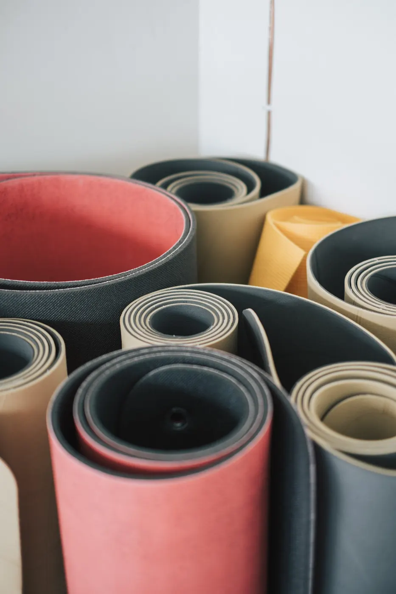
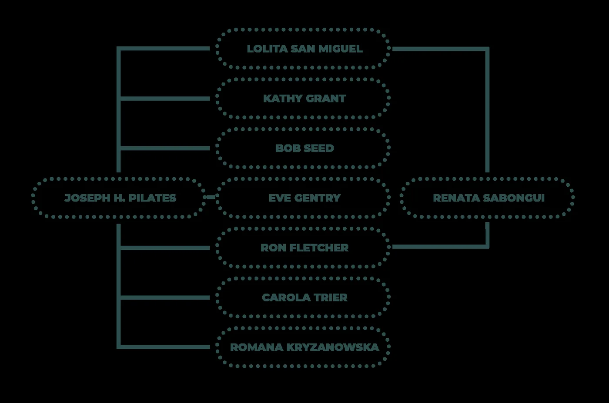

Metoda Josepha Pilatese
Co je pilates a pro koho je
Pilates je cvičení, které zpevňuje zádové, břišní a hýžďové svalstvo, rozvíjí sílu, ohebnost, rovnováhu, koordinaci a dýchání.

01 Přínosy
Co vám pilates dá
- Zlepšuje držení celého těla
- Ulevuje od bolestí zad a krku
- Je prevencí před osteoporózou
- Zpevňuje svalstvo, které při klasickém cvičení není procvičováno
- Je cestou k relaxaci a boji proti stresu
- Zlepšuje tělesnou stabilitu
- Je vhodným doplňkem k rehabilitacím nebo následným cvičením po ukončené rehabilitaci
02 Pro koho
Komu je metoda určena
Metoda je velmi přizpůsobivá, a je tudíž určena mladým i starším, fyzicky aktivním i méně aktivním. Doporučuje se také jako pokračování rehabilitační léčby i jako prevence.
Pilatesova metoda významně doplňuje sportovní činnosti, jako jsou běh, plavání, chůze, hokej, golf nebo lyžování. Při sedavém zaměstnání jistě oceníte tuto techniku jako prevenci napětí v krku a ramenou.
Pilates je vhodné pro
- sportovce, tanečníky a umělce
- lidi s chronickou bolestí zad
- lidi s nadváhou
- těhotné
- lidi trpící stresem
- lidi se zájmem o prevenci osteoporózy a inkontinence
03 Lekce
Pilates se smyslem pro detail
Jsme plně oddáni naší filozofii učit vás kvalitní pilates. Naše práce je o detailech a neustálém zdokonalování. Máme akreditované instruktorky MŠMT, které se vám budou plně věnovat.
Pilates
Lekce na podložce pro začátečníky (level I) i pokročilé (level II), včetně lekcí zaměřených na záda.
Kdo pilates vedeReformer
Cvičení na stroji s pružinami, který pohyb vede i zpřesňuje. V malé skupině nebo jako soukromá lekce.
Kdo reformer vedeBarre
Energická kombinace pilates, tance a posilování u baletní tyče.
Kdo barre vedeJóga
Power jóga i klidnější lekce pro sílu, pružnost a chvíli nadechnutí.
Kdo jógu vedeBodystyling
Funkční posilování celého těla. Na lekce Bodystyling & baby můžete přijít i s miminkem.
Kdo bodystyling vede
04 Historie
Příběh Josepha Pilatese
Kdo byl J. Pilates
Joseph Hubertus Pilates se narodil v Německu v roce 1883 a jako dítě trpěl astmatem, křivicí a revmatickou horečkou. Byl slabé dítě a rozhodl se zesílit. Jeho snažení bylo úspěšné a stal se dokonalým potápěčem, gymnastou, lyžařem a boxerem. Odhodlání k uzdravení ho hnalo ke studiu východních a západních forem cvičení, včetně jógy a starověkých řeckých a římských režimů.
Během první světové války dělal ošetřovatele. Navrhl cvičební vybavení a sérii cviků pro pacienty ležící na nemocničních lůžkách – tento systém tvořil základ jeho jedinečného stylu. Trénoval policejní sbor v Hamburku, chodil k němu Rudolf von Laban (taneční choreograf a pohybový analytik) nebo Mary Wigman (německá tanečnice a choreografka).
Svůj cvičební aparát si pak vzal do New Yorku, kde v roce 1926 otevřel první pilates studio. Podporoval fyzickou harmonii a rovnováhu těla pomocí kontroly dýchání. Studio připoutalo pozornost tanečních komunit a jeho technika se stala základní částí tanečního tréninku (George Balanchine a jeho tanečníci, Martha Graham, Jerome Robbins, Ted Shawn). Netrvalo dlouho a studio přitáhlo elitu z celé Ameriky – herce, hudebníky, atlety i golfisty (Katharine Hepburn, Sir Laurence Olivier, Yehudi Menuhin, Jean Vanderbilt). Všechny přitahovala síla harmonie mezi myslí a svaly.
„Doporučuji všem moje cvičení, udělá vás šťastnějšími. Od té doby, co cvičím, jsem nebyl nemocný, nebral jsem nikdy ani aspirin. Jím to, co mám rád (např. steak). Kdyby lidi viděli, jak žiju – nevěřili by tomu – občas i kouřím doutníky, piju víno a miluji. Láska! Bez té jste mrtví!“
— Joseph H. Pilates
Dvě školy
Vedle základní metodiky si jeho žáci upravili cviky pro vlastní potřebu, proto se setkáváme s variantami. V USA se dnes dělí na:
- East Coast Pilates – New York, Romana Kryzanowska, učí ortodoxně klasickou sestavu cviků.
- West Coast Pilates – Kalifornie, Ron Fletcher, přidává například cvičení s ručníky (Ron Fletcher Towelwork), kterými nahradil původní dřevěné tyče. Tuto pomůcku vymyslel v roce 1972 při otevření studia v Beverly Hills pro Nancy Reaganovou a paní Bloomingdale (značka obchodních domů v USA). Trénoval mimo jiné Cher, Barbru Streisand, Tonyho Curtise, Raquel Welch a Stevena Spielberga.
Do roku 2000 bylo v USA zaregistrováno 11 ochranných známek na vše týkající se pilates. Instruktoři s licencí procházeli náročnými zkouškami. Od roku 2001 se tato striktnost uvolnila: kurzy jsou přístupnější a rozšířenější, ale pod označením pilates se někdy učí i něco úplně jiného. Zájemci o tuto techniku proto musejí být obezřetnější.
Brooke Siler, žákyně Romany Kryzanowské, k tomu dodává, že Joe Pilates vytvořil metodiku obsahující obojí – MAT work (práci na podložce) i APPARATUS work (práci s přístroji). Cílem je zvládnout práci na podložce, která je plně postačující; přístroje jsou integrální částí systému a přinášejí další zkušenosti. Důležité je svěřit se do péče správnému učiteli – vedle instruktorů proškolených za víkend jsou i ti, kdo mají zvládnutou kompletní metodiku obnášející přes 600 hodin v rozmezí minimálně 2–3 let systematické práce.
Známé osobnosti a pilates
Tuto cvičební metodu vyzkoušela řada slavných lidí – mezi nimi Sharon Stone, Courteney Cox, Minnie Driver, Madonna, Julia Roberts, Barbra Streisand, Brad Pitt, hráči týmu Cincinnati Bengals nebo golfista Tiger Woods.

Vyzkoušejte lekci na vlastní kůži
Nevíte, která lekce je pro vás? Zavolejte nám na +420 608 867 232, nebo se zastavte na kávu – rádi poradíme.